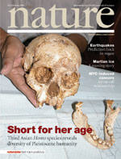
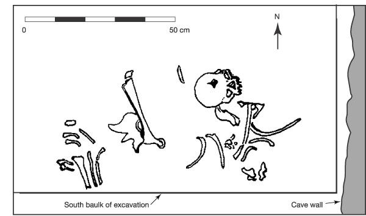
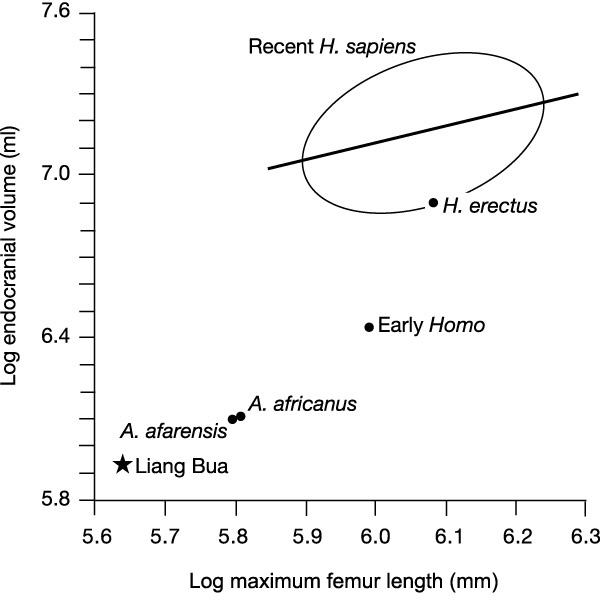
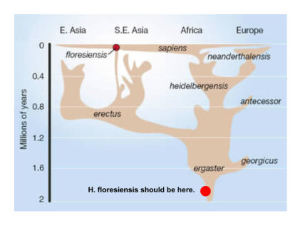

| Evolution in the News - November 2004 |
| by Do-While Jones |
Have "hobbits" been found in Indonesia?
|
 |
The 24 October, 2004, issue of Nature announced the discovery of a "third Asian Homo species" in September, 2003, on the island of Flores in Indonesia. For the past year, the discoverers have been studying the find, which was published last month. The find consists of one partially complete female skeleton (named Liang Bua, abbreviated LB1, and nicknamed a "hobbit"), and a few fragments from other individuals. The skeleton was found in dirt that is believed by evolutionists to be just a few thousand years old, and showed no signs of fossilization. The wear on the teeth suggests that LB1 was about 30 years old when she died, so she was not a child. The skull and bones look almost exactly like those of a modern human, except they are smaller. Adult pygmies, dwarfs, and midgets, are typically about four feet tall. This individual was only three feet tall. Furthermore, little people alive today have heads that are nearly as large as big people, but on smaller bodies. LB1's skull was much smaller than modern human skulls. |
|
The bones were found close together, as shown in the diagram at the right. Some sections of the same site where the skeleton was discovered contain many sharpened stone tools and charred bones, which are generally associated with human activity. Furthermore, since these bones were found on an island that was not thought to have been connected to Asia by a land bridge, these creatures would have had to have used a boat to get there. |
 |
|
Given its body and brain size, as well as some other features, could the remains be those of an australopithecine? Those features include bony reinforcements along the sides of the nose, thigh bones that were less obliquely aligned than ours (a trait essential for the way we walk and deal with gravity), and pelvic bones that were very wide, giving it a different overall body shape from ours. But the answer is again no. Most of LB1's other characteristics, such as the thickness and proportions of the skull, the flexion evident at the skull base, and the shape of the teeth, are derived traits of the genus Homo. Could LB1 be a pygmy H. sapiens? Again, no. Compared with a human skull scaled to less than a third of full size, the LB1 skull differs in shape, robusticity and key features of the base. Furthermore, although human pygmies are short (1.4-1.5 m), they show very little reduction in brain size, probably because their small size is attained through mechanisms that curtail growth during puberty, when brains are already fully grown. Finally, accomplishing the sea-crossing that must have been necessary for the founding population to reach Flores adds to the baffling evidence for complex, supposedly 'sapient', behaviours among archaic hominins. And the behaviour of H. floresiensis itself, of course, remains elusive. Are the 800,000-year-old stones really artefacts? If so, does their date indicate when the taller ancestors of the dwarfed form arrived? The archaeological evidence is controversial. The 800,000-year-old artefacts are simple, crudely flaked pebbles, similar to those found with Javanese H. erectus, as are some found at Liang Bua dating to more than 100,000 years ago. Only a few tools are associated with LB1. But thousands were found with the Stegodon skeleton in another sector of the cave: some are small flakes struck from radial cores; others consist of points, perforators, blades and possibly hafted microblades. Although Morwood et al. attribute the production of all of these tools to H. floresiensis, elsewhere such implements are associated with H. sapiens, and their contrast with tools found anywhere with H. erectus is very striking. 1 |
Well, it looked human, and apparently made tools like a human, so it is classified as human. The question evolutionists are asking is whether this was a different species of human than Homo sapiens.
The generally accepted method for determining if two populations are of the same species is to take a male and a female from each group and send them away for a romantic weekend and see what happens.
You can't do that with bones. All you have to go on is appearance, which may be deceiving. One would not expect poodles and collies to be the same species just by looking at them. There is no way of knowing if the makers of the stone tools were little people or full-sized humans who may have lived in the area. It is all a matter of guesswork.
|
The Flores fossils add a new and surprising twig to the hominin family tree, which diverged from the chimpanzee lineage about 7 million years ago. ... By 2.5 million years ago, our own genus, Homo, had emerged, with its different body shape, slower growth, greater reliance on meat in the diet, and 'encephalization' -- larger brains than expected for body size. ... Homo floresiensis is a challenge -- it is the most extreme hominin ever discovered. An archaic hominin at that date changes our understanding of late human evolutionary geography, biology and culture. Likewise, a pygmy and small-brained member of the genus Homo questions our understanding of morphological variability and allometry -- the relation between the size of an organism and the size of any of its parts. 2 |
Traditionally, evolutionists have taught that as man evolved, his brain got larger, and he got smarter. The first problem they had with that was the discovery of Neanderthal man, a supposedly brutish ancestor whose brain was 30% larger than ours. Neanderthal man should have been a genius. Why didn't he build cities, cars, and computers?
|
 |
Now they have found a creature slightly smaller than a chimpanzee, with a brain slightly smaller than a chimpanzee, with technology apparently equivalent to the prehistoric Indians who once lived in North America. How could these little guys be so smart? Size Doesn't MatterNature published a chart of endocranial volume (brain size) related to femur length (leg length, which is representative of height), showing that the Liang Bua specimen doesn't fit the pattern. According to evolutionary lore, A. afarensis (as typified by the famous skeleton "Lucy") evolved into A. africanus, which evolved into the taller, smarter Early Homo, which evolved into Homo erectus, which evolved into H. sapiens. Liang Bua should be somewhere near Early Homo on the chart. Instead it was shorter, and had a smaller brain (which evolutionists equate with stupidity) than the supposed ape-like ancestors. |
|
The dwarfism of Homo floresiensis is also dramatic, resulting in the shortest adult Homo, and possibly hominin, known. Most significantly, the relative proportions of LB1's brain and body size indicate that the size reduction was more pronounced in the brain than the body, so a non-encephalized descendant evidently arose from an encephalized ancestor. This raises many questions about encephalization and hominin behaviour. 3 |
Let us translate that into plain English. LB1 is shorter and has a smaller brain than Homo anything, and even smaller than Australopithecus anything. So, if LB1 evolved from any Homo species that existed before it, it had to evolve backwards. It had to get shorter, and get a smaller brain than any of its ancestors. But evolutionists have always believed that evolution causes people to get bigger and smarter.
Wrong Place and TimeThe theory of human evolution predicts a small human-like creature near its African ape-like ancestors in rocks 2 to 4 million years old. This creature supposedly evolved into bigger humans who migrated into Asia and Europe. We have modified the figure at the right (which comes from the Nature article) to show where the fossil should appear. The original figure shows an imagined connection between H. erectus to modern times, during which it shrank into H. floresiensis. The problem for evolutionists is that this skeleton was found in the wrong place at the wrong time. If this skeleton had been fossilized, found in 5 million-year-old rock, in Africa, the evolutionists would have been overjoyed. It would have fit their scenario almost perfectly. But it doesn't. |
 |
The obvious conclusion is that Homo sapiens are almost as variable in size as dogs. Furthermore, you can't tell the intelligence of a human by the size of his head any more than you can tell the intelligence of a dog by the size of its head.
|
Previously, we thought that pygmies represented the small end of human variation, but now we have evidence that some people were even smaller. 4 |
The legends about dwarfs apparently have some basis in fact, because there is fossil evidence that people who were only three feet tall did live and prosper in at least one part of the world.
| Quick links to | |
|---|---|
| Science Against Evolution Home Page |
Back issues of Disclosure (our newsletter) |
| Web Site of the Month |
Topical Index |
Footnotes:
1
Lahar and Foley, Nature, Vol. 431, 28 October 2004, "Human evolution writ small", page 1043 https://www.nature.com/articles/4311043a
(Ev)
2
ibid.
3
ibid. page 1044
4
ibid. page 1043